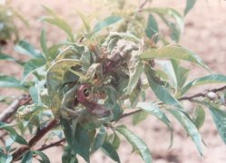

- Rügypattanáskor:
- Később, a perzselés veszélye miatt csak rézpotló szerek:
Őszibarack tafrinás levélfodrosodása
Taphrina deformans
Hűvös, 4-14 fok C közötti átlaghőmérsékletnél, csapadékos
tavaszokon járványos méretekben súlyos lombveszteséget okozva jelentkezik. Ha száraz
az időjárás, a betegség nem alakul ki.
A rügyekben, vesszőkben áttelelő gomba esőcsepp jelenlétében már
rügypattanástól fertőzhet. A levél szövetébe behatolt gomba hatására a levélen
piros kidudorodó foltok jelennek meg, majd a levél megvastagszik, formátlanodik,
sárgászöldre, sötétbordóra színeződik. A fiatal leveleken a tünetek mindig
súlyosabbak. Az erős fertőzés nyomán óriásra nőtt, törékeny levelek lehullanak,
a vesszők nem érnek be, télen elfagyhatnak. A sárga húsú fajták és mészhiányos
talajba ültetett fák általában fogékonyak e betegségre. A mély fekvésű helyekre
telepített ültetvényekben is súlyosabb a megbetegedés, ezért az ilyen helyre ne
ültessünk.
Védekezéshez felhasználható készítmények:
- Rügypattanáskor:
 Rézoxiklorid FW.
Rézoxiklorid FW.
 Bordói lé
Bordói lé
 Rézoxiklorid 50
WP
Rézoxiklorid 50
WP
 Báriumpoliszulfid
45
Báriumpoliszulfid
45
 Miltox-Speciál
Miltox-Speciál
- Később, a perzselés veszélye miatt csak rézpotló szerek:
 Orthocid
50 WP
Orthocid
50 WP
 Zineb 80 WP
Zineb 80 WP
 Chinoin-Fundazol
50 WP
Chinoin-Fundazol
50 WP
 Topsin Metil 70
WP
Topsin Metil 70
WP
 Polyram-Combi
Polyram-Combi
 Efuzin 500 FW
Efuzin 500 FW